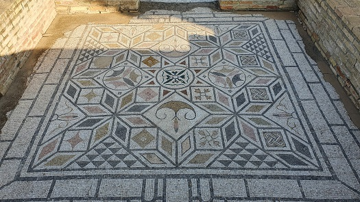
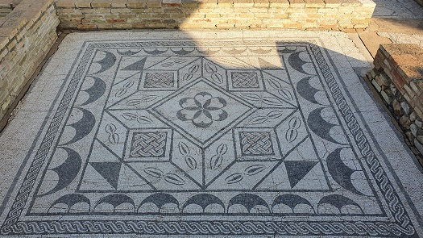
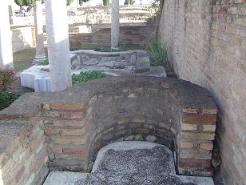

|
CASA DE LOS
PAJAROS
Recibe su nombre de uno de
los mosaicos que adornan una de las estancias de la casa. Sus muros han sido
reconstruidos con la intención de recrear las estancias de la casa. Ésta se
organiza alrededor de un peristilo, jardín porticado. Las habitaciones
principales están decoradas por mosaicos.
Es el único edifico de Itálica totalmente excavado. Era una casa señorial de
alguna familia aristocrática de la ciudad. Mide unos 1.700m2 una de las más
pequeñas.
A ambos lados de la entrada se observan las tabernaes, una de ellas con los
restos de una panadería. Tiene una triple entrada, fauces o ostium, con el vano
central más ancho que los laterales que da paso a un portal cerrado con tres
puertas. Al lado se halla una cella osotaria que se interpreta como portería.
|
 |
 |
Tras el muro cóncavo se halla el vestíbulo, vestibulum, con
75m2 donde el señor de la casa, el dominus, haría la ceremonia del
salutatio. En esta ceremonia matinal los clientes por orden jerárquico
hacían cola para saludar al señor y recibían de forma simbólica la propina,
sportula. Después del vestíbulo se llegaba al peristylum, patio
porticado de unos 440m, principal fuente de luz y ventilación.
|
En el centro se hallaba el jardín, viridarium. Debajo de este estaba el aljibe
subterráneo que captaba el agua de la lluvia recogida por el tejado. En el
jardín también se hallan los restos de un pilón y un lararium, altar
dedicado a los lares, deidades protectoras del hogar. La habitación más
grande de la casa es el triclinium con unos 90m2, situado en el eje
principal enfrentado al vestíbulo. En el se realizaba el coniuium,
banquete social. Al fondo de la casa se halla la zona privada donde
estarían los dormitorios, cubicula, en torno a dos patios columnados.
Destaca el mosaico
del cubiculum, que representa a Tellus, diosa que personifica la tierra
cultivable, la fertilidad y pueden verse ocho cuadros que alternas pájaros y
vegetales. |
 |
Otro mosaico
representa a Medusa. El resto de mosaicos representas motivos geométrico y
vegetales.
Ver
Villas romanas
|